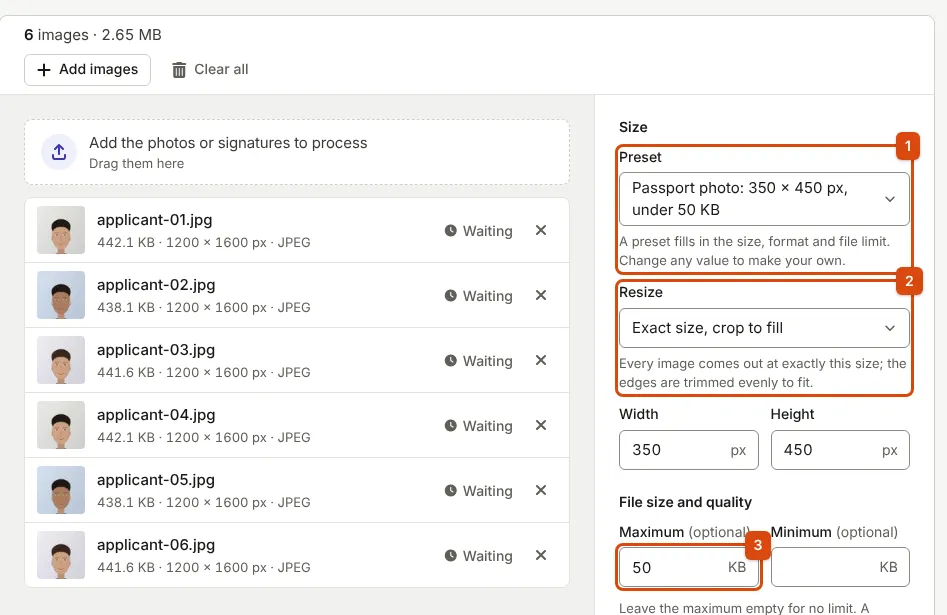
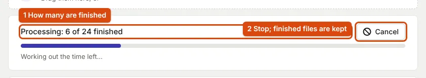
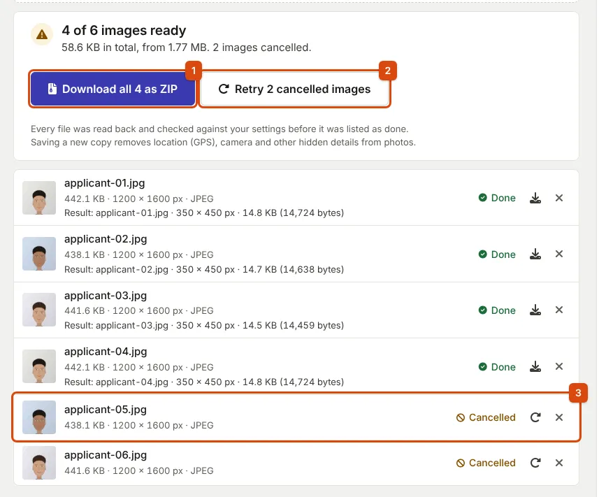
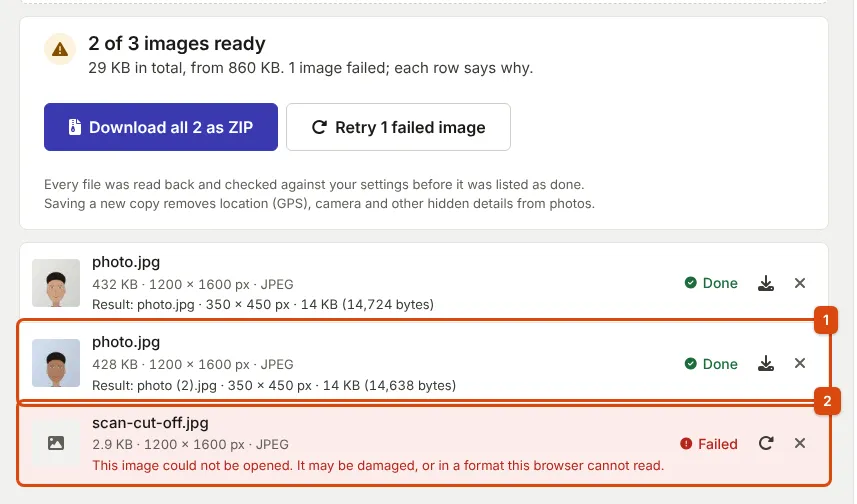

How to Resize or Compress Many Photos at Once
One setting for a whole list of photos: add them, pick a preset, start, and download a ZIP. Cancel keeps what is finished, and retry runs only what is left.
When to use the batch processor
The batch image processor applies one size, file limit and format to many images at once: photos of a whole class for an application drive, a queue of applicants at a cyber cafe, or your own set of certificate scans. Everything runs in your browser, a few images at a time. For a single photo that needs careful cropping, the resizer is better, as resizing a photo for an application shows; to make files smaller without fixing their size, see compressing an image.
Before you start
- The images: JPG, PNG, WebP, GIF, BMP or AVIF, up to 50 MB each and 500 files at a time.
- The requirement: pixel size, KB limit and format, the same for every image.
- A note on cropping: in batch mode every photo is cropped from the centre. Photos where the face is far off-centre are better done one at a time in the resizer.
- Time: on a phone, large batches are slower. If the page struggles, process smaller groups.
Step 1: Add the photos
Open the batch image processor. Select Choose images, drag files or a selection of files onto the box, or paste images. Each one gets a row with a thumbnail, its size, pixel size and format, and the status Waiting. The bar at the top counts them, for example 6 images · 2.5 MB. A file that is not an image is not added, and a message lists why.
Step 2: Choose a preset
Under Size, open Preset. The choices are Custom settings, Passport photo: 350 × 450 px, under 50 KB, Signature: 300 × 100 px, under 30 KB, Profile photo: 400 × 400 px, under 100 KB and Document scan: within 1240 × 1754 px, under 500 KB. A preset fills in the size, format and file limit; you can then change any value, which turns the preset back to Custom settings.

Resize decides how each image meets the size: Keep the original size, Fit within a box, keep proportions, Exact size, crop to fill, Exact size, add padding or Scale by a percentage. The line under the menu describes the one you picked. Below it are the same limit, quality and format settings as the compressor.
Step 3: Start, and cancel if you need to
Select the button at the bottom of the settings, which names the job, for example Process 6 images. A progress panel appears above the list with how many are finished, a bar, and an estimate such as About 10 seconds left once there is enough to estimate from.

Select Cancel to stop. Images already finished are kept and can be downloaded; the rest are marked Cancelled.

Step 4: Retry what failed or was cancelled
When anything failed or was cancelled, the panel offers Retry with a count, for example Retry 2 failed and cancelled images. It processes only those rows; finished images are not redone. Each row also has its own retry button. A row marked Failed says why in red, for example This image could not be opened. It may be damaged, or in a format this browser cannot read. A damaged file fails again on retry; replace it with a good copy.
Step 5: Check names, then download the ZIP
Each finished row shows Result: with the output name, pixel size and size in KB and bytes. If two photos have the same file name, for example two files called photo.jpg from different folders, the second result is named photo (2).jpg, in the list and in the ZIP, so nothing is overwritten.

Under More settings, Name the results can also add a word to the end of each name or number the files in order. When you are happy, select Download all with the count, for example Download all 4 as ZIP. The file is called applyready-images.zip. Each row's download button saves a single image.
What you get
- One ZIP file with every finished image, each at the size, limit and format you set, and each opened again and checked before it was listed as done.
- Unique names, with (2), (3) and so on added where names repeat.
- New copies without location (GPS), camera and other hidden details. Your original files stay as they were.
If something goes wrong
"You changed the settings after processing."
Finished images still use the old settings and their rows say Done, old settings. Select Process again to redo them.
The page is slow or the phone gets warm
A large batch is a lot of work for one browser tab. The processor works on a few images at a time to keep memory in check, but a phone is still slower than a computer. Process the photos in smaller groups.
"This batch is full"
One batch holds 500 images. Process and download these, select Clear all, and add the next group.
A face is cut off
Exact size, crop to fill trims the edges evenly. Do that photo on its own in the passport photo resizer, where you place the crop yourself.
On a shared computer
The images live only in this tab and are forgotten when you close it, but the ZIP you downloaded stays in the Downloads folder. Delete it when you finish; see privacy on a shared computer.
Sources
- MDN Web Docs: Web Workers API, how images are processed in the background of the tab
- MDN Web Docs: Image file type and format guide
- Library of Congress: JPEG Image Encoding Family
Every step on this page was followed in the current batch processor with our synthetic sample photos. Found a mistake? Report an error.